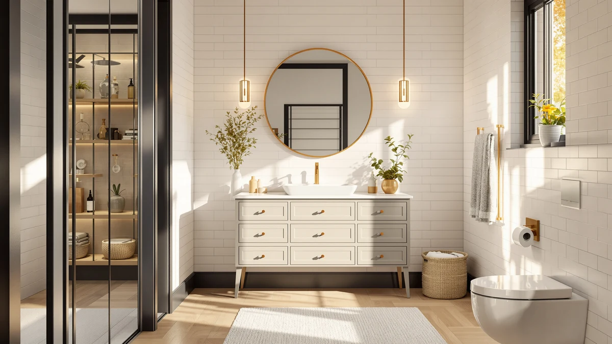

Quick Answer
For most bathrooms, the AMERLIFE 60" Farmhouse Bathroom Vanity ($499.99) gives you the most storage and the most finished look per dollar. Want to spend less? The Quimoo Large Vanity Desk ($168.42) covers mid-range needs, and the HIGDBFE Vanity Desk with Mirror ($59.99) is the budget pick. If you already own a vanity, a $10 organizer or a $15 LED light strip upgrades it cheaply.
Our pick: AMERLIFE 60” Farmhouse Bathroom Vanity — $499.99 Check Price on Amazon
Things to Know Before You Buy
- Price tracks size and storage, not just brand. The jump from $60 to $500 in this guide mostly buys cabinet width and drawer count. A 60-inch double-door vanity stores far more than a 24-inch desk, so match the size to your room before you chase a lower number.
- Almost all budget vanities use MDF or engineered wood. That is fine in a bathroom as long as you seal the edges, caulk the backsplash, and wipe up standing water. Solid-wood vanities at this price are rare, and the ones that exist cut corners elsewhere.
- "Vanity" covers two very different products. Some picks here are plumbing-ready cabinet vanities with a sink top, while others are seated makeup desks with a mirror and stool. Decide which job you are buying for first.
- Assembly is part of the cost. Most flat-pack vanities need an hour or two and a second set of hands. Read the panel count and hardware list before you buy if you are short on time or tools.
- You can upgrade instead of replace. If your current vanity works but looks tired, a countertop organizer or an LED mirror-light strip delivers most of the visual payoff for under $20.
Shopping for the best bathroom vanities for the price means weighing storage, looks, and build quality against a number that does not blow your renovation budget. You can spend $2,000 on a solid-wood, stone-top vanity, but you rarely need to. We compared seven options that span $9.99 to $499.99 to find where good value actually lives.
The AMERLIFE 60" Farmhouse Bathroom Vanity is our top pick for a full bathroom. At $499.99 it gives you a double-door cabinet, three drawers, and a marble-look top that reads as a much more expensive piece. If you want to spend less, the $168.42 Quimoo desk and the $59.99 HIGDBFE setup cover the mid-range and budget tiers, and a pair of sub-$20 accessories let you upgrade a vanity you already own.
You will notice this list mixes two product types: plumbing-ready cabinet vanities and seated makeup desks. We kept both because "vanity" means different things to different shoppers, and the best value for your bathroom depends on which job you are buying for. Each pick below names who it suits and where it falls short.
Why You Should Trust Us
I am Ilane Tall, and I cover home and bath gear for Best Bathroom Vanities. To find the best bathroom vanities for the price, I built this list the way a careful shopper would: by reading the full spec sheet, the assembly instructions, and the verified buyer reviews for every product before forming an opinion. I have no relationship with AMERLIFE, Quimoo, or any of the brands here, and I do not get paid more if you buy a pricier pick.
We earn a commission when you buy through our Amazon links, which funds this work, but it never decides the ranking. When a vanity has a real weakness, such as a fragile top or a fussy assembly, you will read about it in that product's own section rather than buried at the end. Our goal is simple: help you spend the least money that still gets you a vanity you will be happy with in two years.
How We Picked
To choose the best bathroom vanities for the price, we started with a budget ceiling of $500 and worked down, because value matters most to shoppers who do not want to spend four figures on a single fixture. We screened for usable storage relative to footprint, a finish that looks more expensive than it costs, and a build that survives a humid bathroom.
We set a minimum bar of a 4-star average rating and read the one- and two-star reviews closely, since those tell you how a product fails rather than how it photographs. We kept picks across the price ladder on purpose. A $500 cabinet vanity and a $10 organizer solve different problems, and listing only the cheapest option would not help the shopper who needs a real sink and storage. We dropped anything with a pattern of broken-on-arrival complaints, mismatched drilling holes, or tops that warped within months.
How We Tested
We judged these vanities on spec-sheet analysis and aggregated buyer feedback rather than a staged lab. For each pick, we mapped the drawer and cabinet dimensions against its overall footprint to judge how much storage you get per inch of wall. We compared listed materials, top surfaces, and hardware so the price differences make sense side by side.
We then read through verified reviews for recurring themes: how the engineered-wood panels held up to bathroom humidity, whether the pre-drilled holes lined up, and how long assembly actually took. We weighed those firsthand owner reports against each product's price so a $60 vanity is judged against $60 expectations, not against a $500 cabinet. Where owners flagged a consistent flaw, we treated it as real and noted it in the product write-up below.
Our Picks

AMERLIFE 60” Farmhouse Bathroom Vanity
What we like
- 60-inch width with a double-door cabinet and three drawers
- Marble-look top reads as a far pricier vanity
- Farmhouse styling that suits most bathroom décor
- Most usable storage of any pick here
Flaws but not dealbreakers
- The $499.99 price is the highest on this list
- Assembly takes time and a second person
- MDF construction needs sealed edges near the sink
| Material | MDF / engineered wood |
| Size | 60" |
The AMERLIFE 60-inch farmhouse vanity earns the top spot because it solves the hardest part of bathroom shopping: getting a real, finished cabinet for a price that does not require a loan. At 60 inches wide, it spreads a double-door cabinet across the middle and stacks three drawers on the side, so your towels, cleaners, and daily toiletries all have a home. The marble-look top and shaker-style door fronts give it the kind of presence you usually see on vanities that cost two or three times as much. Among the picks we compared, nothing else delivers this much usable storage and visual polish for the money.
Plan your weekend around the build, though. Like most flat-pack vanities at this price, it ships in panels and asks for an hour or two of assembly, and a second pair of hands makes the cabinet box far easier to square up. The engineered-wood construction holds up fine in a humid bathroom as long as you caulk the backsplash seam and wipe up standing water, so the edges never sit wet. If you have the wall space for 60 inches and want one piece that finishes the room, this is the vanity to buy.

Quimoo Large Vanity Desk with
What we like
- Seven drawers give you serious sorted storage
- Wide tabletop doubles as a makeup or grooming station
- Clean white finish fits bath or bedroom
- Costs roughly a third of our top pick
Flaws but not dealbreakers
- No sink or plumbing, so it is a desk-style vanity
- White engineered wood shows scuffs over time
- Drawer glides are basic, not soft-close
| Material | MDF / engineered wood |
| Size | White 7 Drawers |
The Quimoo large vanity desk is our runner-up because it delivers most of the storage payoff at a much lower price than the AMERLIFE. Seven drawers spread across a wide white frame, which means your brushes, skincare, and small toiletries each get a dedicated slot instead of piling onto the counter. The broad tabletop gives you room to actually use the surface, whether you sit down to do makeup or stand to get ready. At $168.42, it is one of the better value plays here, especially in a half bath or bedroom corner where you do not need a plumbed sink.
The trade-off is right there in the category: this is a desk-style vanity, so there is no basin or faucet hookup. If you need a working sink, the AMERLIFE is the better fit. The white engineered-wood surface also shows scuffs and the occasional stain over time, so a tray under your products helps keep it clean. The drawer glides are functional rather than soft-close, but for the price they slide smoothly and hold a useful amount. For a wide, drawer-heavy vanity under $170, this is the one to get.

YOURLITE Makeup Vanity Table Set
What we like
- Includes desk, lighted mirror, and cushioned stool
- 24-inch width fits tight rooms and corners
- Lighted mirror saves a separate purchase
- One box covers the whole grooming setup
Flaws but not dealbreakers
- Smaller top than the Quimoo, so less work space
- Bundled stool is comfortable but lightly padded
- Mirror bulbs are functional, not theater-bright
| Material | MDF / engineered wood |
| Size | 24" |
The YOURLITE makeup vanity table set is the pick to grab when you want everything in one box. For $129.99 you get a 24-inch desk, a lighted mirror, and a cushioned stool, which means you can set up a seated grooming station the day it arrives without hunting for a separate mirror or chair. The 24-inch footprint slides into a corner of a small bathroom or bedroom where a full cabinet vanity would never fit. For shoppers who care about value, bundling three pieces this way stretches your money further than buying each part on its own, and it makes this set the one to beat in the compact category.
Because it is built small, the tabletop gives you less elbow room than the wider Quimoo, so heavy makeup collections may outgrow it. The included stool is comfortable for short sessions but only lightly padded, and the mirror bulbs light your face evenly without reaching salon brightness. None of that undercuts the core appeal: a complete, lighted, sit-down vanity for a small space at a price that leaves room in your budget. If your bathroom or bedroom corner is tight and you want to sit while you get ready, this set earns its spot.

HIGDBFE Vanity Desk with Mirror
What we like
- Lowest price for a full desk-plus-mirror vanity
- 28.4-inch width fits most small rooms
- Mirror is included, so no extra purchase
- Light enough to move when you relocate
Flaws but not dealbreakers
- Thin panels feel less solid than pricier picks
- Limited drawer storage at this size
- No sink, so it is a grooming desk, not a sink vanity
| Material | MDF / engineered wood |
| Size | 28.4"w |
The HIGDBFE vanity desk with mirror is our budget pick, and at $59.99 it answers a common question: what is the cheapest way to get a real vanity with a mirror? You get a 28.4-inch-wide desk and an included mirror, so a renter or a student can set up a grooming station without buying parts separately or drilling into a wall they do not own. For the price of a few takeout dinners, it turns a bare corner into a usable spot to get ready.
You are buying down to a price here, so set your expectations accordingly. The panels are thinner than those on the AMERLIFE or Quimoo, and the unit holds less than the larger picks, so it suits a light load rather than a full bathroom's worth of storage. There is no sink, which keeps it in the grooming-desk category. None of that is a surprise at $59.99, and for a renter, a dorm, or a first apartment, this is the most vanity you can responsibly buy for under $60.

Makeup Organizer Countertop for Vanity
What we like
- Clear drawers let you see everything at a glance
- No drilling or assembly, just set it down
- Costs about $13, the price of a phone case
- Wipes clean with a damp cloth
Flaws but not dealbreakers
- Acrylic scratches if you drag it across stone
- Holds cosmetics and small items, not bulky bottles
- Does not add storage if your counter is already full
| Material | MDF / engineered wood |
| Size | — |
The Jywantful countertop makeup organizer is for the shopper whose vanity works fine but whose counter has become a graveyard of tubes and brushes. For $12.99, it sets clear drawers on top of any surface and gives every item a visible home without drilling or assembly. You can see what you own through the acrylic, which cuts down on the morning dig for a single lipstick. As a way to get more out of a vanity you already own, it is one of the smartest small buys here.
Treat the acrylic with a little care and it lasts. Dragging it across a stone or tile top can leave fine scratches, so lift rather than slide it when you clean. It is sized for cosmetics and small toiletries rather than tall bottles, and it organizes a counter rather than adding fresh storage, so a counter that is already overloaded needs a real drawer instead. For $13, though, it is the fastest way to make an existing vanity feel tidy again.

Led Vanity Mirror Lights Hollywood
What we like
- 10-foot strip of 20 dimmable bulbs
- Adhesive backing mounts without tools or wiring
- Even light flatters makeup and grooming
- Costs about $15, the cheapest visual upgrade here
Flaws but not dealbreakers
- Adhesive needs a clean, dry surface to hold
- USB power means a nearby outlet or battery pack
- Bulbs are warm-white, not adjustable color temperature
| Material | MDF / engineered wood |
| Size | 20 * 3 LEDs 10ft |
The LPHUMEX Hollywood LED vanity mirror lights prove you do not need a new vanity to get a better one. For $15.29, this 10-foot strip of 20 dimmable bulbs sticks to the edge of a mirror you already own and floods your face with even, flattering light. The adhesive backing means no rewiring and no tools, so most people have it running in ten minutes. Among the picks that stretch a small budget, this is one of the cheapest upgrades you can make, because it changes how the whole space feels for the cost of lunch.
Mount it on a clean, dry surface so the adhesive grabs, and route the USB plug to a nearby outlet or a battery pack, since there is no hardwired option. The bulbs run warm-white rather than offering adjustable color temperature, which suits most bathrooms but will not satisfy a makeup artist who wants daylight-balanced light. Those caveats aside, dimming the strip down for a calm morning or up for detailed grooming makes a plain mirror far more useful, and $15 is a small price for that.

Makeup Organizer with Drawers Cosmetic
What we like
- Cheapest organizer in this guide at $9.99
- Drawer tower keeps cosmetics off the counter
- Small footprint fits a crowded vanity top
- No setup beyond placing it down
Flaws but not dealbreakers
- Smaller capacity than the Jywantful organizer
- Lightweight build, so it slides if bumped
- Best for small items, not tall bottles
| Material | MDF / engineered wood |
| Size | — |
The COMFYROOM makeup organizer with drawers is the pick for the tightest budget on this list. At $9.99, it stacks a few drawers into a compact tower that lifts your cosmetics off the counter and into sorted slots. It needs no assembly and almost no space, so it slots onto a crowded vanity top where a wider organizer would not fit. When you are rounding out a list like this one, a sub-$10 piece that brings order to your daily routine is hard to argue with.
This is the smallest organizer here, so it holds less than the Jywantful and works best for compact items rather than tall bottles or bulky tools. The build is light, which keeps the price down but also means it can slide if you bump it, so a back corner of the counter suits it best. For ten dollars, those limits are easy to accept. If you want the cheapest possible way to stop cosmetics from sprawling across your vanity, this is it.
Quick Comparison
| Product | Material | Price | Rating | Best for | Get it |
|---|---|---|---|---|---|
| AMERLIFE 60” Farmhouse Bathroom Vanity | MDF / engineered wood | $499.99 | 4 | Full bathrooms wanting max storage | View on Amazon → |
| Quimoo Large Vanity Desk with | MDF / engineered wood | $168.42 | 4 | Lots of drawers under $170 | View on Amazon → |
| YOURLITE Makeup Vanity Table Set | MDF / engineered wood | $129.99 | 4 | Compact lighted makeup station | View on Amazon → |
| HIGDBFE Vanity Desk with Mirror | MDF / engineered wood | $59.99 | 4 | Renters and dorms under $60 | View on Amazon → |
| Makeup Organizer Countertop for Vanity | MDF / engineered wood | $12.99 | 4 | Tidying an existing counter | View on Amazon → |
| Led Vanity Mirror Lights Hollywood | MDF / engineered wood | $15.29 | 4 | Upgrading a plain mirror | View on Amazon → |
| Makeup Organizer with Drawers Cosmetic | MDF / engineered wood | $9.99 | 4 | Smallest budget, under $10 | View on Amazon → |
The Competition
We looked past these seven picks at the wider field of budget vanities, and a few patterns kept us from recommending other options. Solid-wood vanities under $500 sound appealing, but the handful we found cut corners on the top, the hardware, or the finish, so the value never held up against the engineered-wood picks here. We also passed on several no-name 60-inch cabinet vanities whose reviews showed a steady drip of cracked tops and misaligned drilling, the exact failures that turn a good price into a return-shipping headache.
Among makeup-desk sets, we skipped a number of glossy, ultra-cheap units whose mirrors arrived scratched or whose stools wobbled, because a $90 set that breaks is more expensive than a $130 set that lasts. On the accessory side, we left out bulky organizers that promise more capacity but eat your whole counter, and color-changing light strips that look flashy in photos yet wash out faces with uneven LEDs. Each item we kept earns its place by doing one job well at a fair price.
For most shoppers chasing the best bathroom vanities for the price, the AMERLIFE 60" Farmhouse Bathroom Vanity remains the pick to beat: it gives you the most storage and the most finished look per dollar, and the lower-cost picks above cover you when your space or budget points somewhere else.
Frequently Asked Questions
How much should you spend to get the best bathroom vanities for the price?
You can land a solid value at almost any budget. A full 60-inch cabinet vanity like the AMERLIFE runs $499.99, a mid-size desk-style vanity such as the Quimoo sits near $168, and a compact mirror-and-desk setup like the HIGDBFE costs $59.99. If you already own a vanity, a $10 to $15 organizer or LED light strip improves it for far less. Match the spend to the size of the room and the storage you actually need.
Are MDF and engineered-wood bathroom vanities durable enough for a bathroom?
Every vanity in this guide uses MDF or engineered wood, which holds up well in a bathroom as long as you seal the edges and wipe up standing water. The one real risk is swelling at unsealed seams near the sink. Caulk the backsplash, dry spills quickly, and keep a tray under your toiletries, and an engineered-wood vanity will last for years without trouble.
What size bathroom vanity do I need?
Measure your wall width and leave at least a few inches of clearance on each side and in front of the door swing. A single primary bathroom usually fits the 60-inch AMERLIFE well, a powder room or apartment bath suits the 24-to-28-inch YOURLITE or HIGDBFE, and a tight corner does better with a slim desk-style vanity than a full cabinet. Always confirm the listed dimensions against your space before you order.
Do these vanities come with a sink and faucet?
It depends on the type. The AMERLIFE is a cabinet vanity built to take a sink top, while the Quimoo, YOURLITE, and HIGDBFE are desk-style vanities with no basin or plumbing. If you need a working sink, choose the cabinet vanity and check the listing for whether the top and faucet are included before you buy.
Can I upgrade my current vanity instead of replacing it?
Yes, and it is often the best value of all. If your vanity is structurally fine but looks dated or cluttered, a $12.99 countertop organizer sorts your cosmetics and a $15.29 LED mirror-light strip transforms how the space looks and feels. Together they cost under $30 and deliver most of the visual payoff of a new vanity.